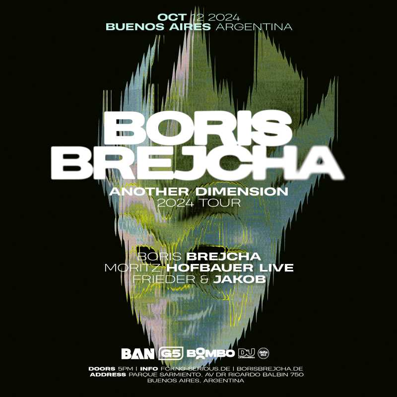

BORIS BREJCHA EN PARQUE SARMIENTO
El sábado 12 de octubre te invitamos a ser parte de Another Dimension - el nuevo show audiovisual de Boris Brejcha en el Parque Sarmiento de la Ciudad de Buenos Aires. Prepárate para disfrutar de visuales completamente nuevas, shows de luces y un escenario construido exclusivamente para crear una experiencia única. Boris Brejcha presenta: Another Dimension en Parque Sarmiento, Buenos Aires, Argentina junto a Mortiz Hofbauer y Frieder & Jakob. Entradas a la venta desde este momento a través de Bombo.
TU ENTRADA👈